作业 3 · 人工智能应用：星算诗台
一、项目缘起：把「一句话」写成「一首诗」
苏轼评王维「味摩诘之诗，诗中有画；观摩诘之画，画中有诗」——「诗中有画」说的是文字里的画面感：读一句「孤帆远影碧空尽」，眼前就浮出一叶孤舟。这句话原本只存在于赏析里，而这一篇讲「人工智能应用」，课堂上的第一个案例正是人工智能诗人：给出主题或几个词，它就能写出一首像模像样的诗。
我做的是把这一段做深——项目叫星算诗台：输入一句话需求，机器先把意图凝成意象，再按所选诗体的真实格律，把 18.9 万首真实古诗词里筛出的句子重装成一首新诗。它不画了，只做一件事，并且把这件事做到紧扣主题、关键词与情感基调。
主题 / 关键词 / 情感
主题字 → 意象
月 · 山 · 水 · 舟
句数 · 字数 · 韵
真实句子重装
配套交互项目放在 实验室 3 · 星算诗台：输入你想表达的意思，选一种诗体，就能现场生成一首诗。本页先讲清楚它为什么能工作，以及它站在前两篇的哪些肩膀上。
二、工作原理：从需求到诗
整条链路可以拆成三段。每一段都不是魔法，而是前两篇里「表示—学习—生成」思想的组合。
2.1 人工智能诗人：需求怎样变成一首诗
诗人要做的事，是把模糊的意图变成受约束的文字序列。工程上分四步：
| 步骤 | 做什么 | 对应前两篇的概念 |
|---|---|---|
| ① 意图解析 | 从需求里认出主题（思乡、送别、春景……）与情感基调（喜、悲、壮、淡）。 | 把自然语言变成可计算的表示（第 10、11 章：知识表示 vs 学习到的表示） |
| ② 意象抽取 | 由主题联想一组意象：月、柳、舟、雁、雪……意象是诗的「语义骨架」。 | 特征与中间表示（第 15、16 章：隐藏层把输入映射到新空间） |
| ③ 风格约束 | 选定诗体（中国古典诗 6 种 + 宋词曲牌 22 种，共 28 种），规定句数、字数与押韵方式。 | 规则与约束（第 10 章基于知识：格律是人写死的确定性规则） |
| ④ 序列生成 | 在约束下逐字/逐词挑出最合适的下一个符号，组成诗句，再筛掉不通顺的候选。 | 从数据中学习概率规律（第 11、20 章基于学习：语言模型预测下一个词） |
换句话说，诗人同时用了两种力量：人写的规则（格律、押韵、字数）保证「像一首诗」，从数据学到的规律（哪些词常搭配、哪些意象常同现）保证「读起来通顺、有意境」。真实的大语言模型把第二步和第四步都放进一个巨大的神经网络里完成；实验室 3 为了能在浏览器里离线运行，用一个精简的意象词库与格律模板来做同样的分工——原理相同，规模不同。
📖 对照教材 · 第 30 章「人工智能诗人」：讲义开篇一句「押韵容易，写出意味难」正好点破了我做这个项目时的困惑。它把评价拆成两层——形式（字数、句数、押韵、格律，可逐项核对）与内容（主题、意象、情绪是否连贯，是否有新意），并强调「押韵分数不能代替人的审美判断」。回看实验室 3，我的离线模式只保证了形式层：字数格律逐句精确（28 种诗体含 22 种词牌的真实格律），但意象是否真的连贯、有没有新意，它并不会检查——这正是讲义说的技术边界。讲义还提到「看图作诗」（先从画面提取对象、场景、氛围，再用符合诗体的语言表达）以及 BIPro（ACL 2025）让模型「生成后再按形式和表达问题多轮修订」的做法，论文的人类评价更偏好这种迭代修订。于是我在实验室 3 里补上了「生成 → 自检 → 改写」：自检把形式（逐句字数、句数对照诗体格律）与表达（取景意象命中、叠字凑句、意境需人读）分成两张清单，改写再按清单里的具体问题重做——AI 模式把问题清单交给模型修订，离线模式针对问题重新取景生成，并保留前后对照。它并没有给诗打一个总分，因为讲义说得很清楚：目前没有能替代文学判断的统一分数，自动评测只适合辅助筛查具体问题。
2.2 真实语料重装：诗是怎么被「造」出来的
如果只用词库与模板按格律拼句，产出的往往是「像诗的句子」而不是诗。星算诗台的做法是把真实语料当成唯一的素材来源：从古诗词网站公开的 18.9 万首（189,467 首）古诗词原文中，提取出 237 万句真实短句与一整套结构要素，再按诗体的格律重新排列组合。
意象 · 首尾字 · 韵 · 共现
只选命中主题意象的句
字数 · 句数 · 韵脚
关键在三重贴合：主题与关键词、情感基调、诗体格律不是三选一，而是在主题约束下挑最贴情绪的句子。候选池只收命中主题意象的真实句，情感基调在这批句子里做择优——「既含主题意象、又合当前情绪」的句子优先级最高；再叠加一道诗性加权（按字频判断一句更像不像诗，降权佛偈、官职等非诗性词）与一道季节一致性校验（主题写「秋夜」就不会选进「春来江水绿如蓝」）。
还有一个容易被忽略的点：同一主题、同一种诗体，应当得到同一首诗。所以星算诗台用「主题 + 诗体 + 情感 + 序号」的哈希做随机种子，所有选句决策都由种子决定——可复现，才谈得上「可检验的生成」，而不是每次刷新都换一首。这与作业 2 里「固定随机种子保证实验可复现」是同一个道理。
📖 对照教材 · 第 30 章「人工智能诗人」：讲义开篇一句「押韵容易，写出意味难」正好点破了我做这个项目时的困惑。它把评价拆成两层——形式（字数、句数、押韵、格律，可逐项核对）与内容（主题、意象、情绪是否连贯，是否有新意），并强调「押韵分数不能代替人的审美判断」。回看实验室 3，我的离线模式只保证了形式层：字数格律逐句精确（28 种诗体含 22 种词牌的真实格律），但意象是否真的连贯、有没有新意，它并不会检查——这正是讲义说的技术边界。讲义还提到 BIPro（ACL 2025）让模型「生成后再按形式和表达问题多轮修订」的做法，论文的人类评价更偏好这种迭代修订。于是我在实验室 3 里补上了「生成 → 自检 → 改写」：自检把形式（逐句字数、句数对照诗体格律）与表达（取景意象命中、叠字凑句、意境需人读）分成两张清单，改写再按清单里的具体问题重做——AI 模式把问题清单交给模型修订，离线模式针对问题重新取景生成，并保留前后对照。它并没有给诗打一个总分，因为讲义说得很清楚：目前没有能替代文学判断的统一分数，自动评测只适合辅助筛查具体问题。
2.3 一条「需求—意象—诗句」的流水线
意象是这条链路的接口：需求里的主题字被解析成一组意象（中间表示），意象决定去真实语料里挑哪些句子（检索与筛选），诗体的格律再决定这些句子怎么排、每句多长（约束与生成）。这条链路把第一篇的「语言与智能」和第二篇的「表示、学习、网络结构」串成了一次完整的生成任务——也正是第三篇「人工智能应用」最典型的样子：不是单一模型，而是把多种能力组织成一个能用的系统。
三、用到了前两篇的哪些人工智能基础知识
这一节把项目拆回教材章节，逐条说明「哪里用到了」。这也是本作业刻意要做的事：应用不是凭空来的，它站在基础之上。
| 教材章节 | 知识点 | 在本项目里的落点 |
|---|---|---|
| 第 1 章 什么是人工智能 | 让机器做需要人类智能的事 | 写诗过去被认为是「人的创造」，本项目正是让机器去尝试这件典型的人类智能任务。 |
| 第 2、3 章 人类智能 | 语言、想象与知识积累 | 「意象」是人脑把感受组织成画面的方式；项目把意象显式化，作为需求与诗句之间的中间接口。 |
| 第 5 章 图灵 | 可计算与形式化 | 把「写诗」形式化为「在约束下生成符号序列」，才可能被程序处理。 |
| 第 7 章 发展历程 | 符号主义 ↔ 连接主义 | 格律词库是符号主义（人写规则），大模型生成是连接主义（从数据学），本项目两者并用。 |
| 第 8 章 让人惊讶的 AI | 生成式 AI 的能力 | 「根据需求生成全新的诗」正是生成式 AI 让人惊讶的地方，也是本项目的直接灵感。 |
| 第 9 章 人工智能风险 | 幻觉、偏见、版权 | 模型可能「编造」事实、继承训练数据偏见；AI 生成作品的版权归属也是真实争议——见第四节。 |
| 第 10 章 基于知识的人工智能 | 规则由人写死、结果可复现 | 诗体的字数、押韵、意象与主题的映射表，都是人写的确定性规则。 |
| 第 11 章 基于学习的人工智能 | 从数据里学规则 | 真实诗人模型的生成能力来自海量诗作数据的学习，不是把规则一条条写进去。 |
| 第 12 章 机器学习基本流程 | 数据 → 模型 → 训练 → 推理 | 「生成」对应流程最后的推理阶段；训练阶段决定了模型见过多少诗。 |
| 第 13、14 章 学习方法与策略 | 如何学、学到什么程度 | 生成质量取决于训练目标与数据；采样策略（贪心 vs 带随机）决定诗是稳妥还是灵动。 |
| 第 15 章 人工神经元网络 | 加权求和 + 激活 | 语言模型与图像模型的最底层，都是这种简单单元的堆叠。 |
| 第 16 章 典型网络结构 | 面向任务的网络结构 | 写诗常用 Transformer（处理序列）——结构为任务而生。 |
| 第 17 章 深度学习 | 多层表示、端到端 | 「语义 → 意象 → 诗句」是逐层抽象的表示链，深层网络能把高维语义一步步落成文字。 |
| 第 18 章 深度学习前沿 | 多模态 | 把文字和图像放进同一个表示空间，是「图文互生成」能成立的前沿基础；本站只做文本侧，多模态留作扩展。 |
| 第 19 章 面临的挑战 | 泛化、过拟合 | 模型可能只会「背」见过的句子；能不能写出没见过的好诗，考验的是泛化而非记忆。 |
| 第 20 章 大模型时代 | 大语言模型 / 多模态大模型 | 大语言模型正是大模型时代的产物；本项目是它在浏览器里的教学化缩影。 |
| 第 30 章 人工智能诗人 第三篇 · 人工智能应用 | 形式与意境分开看；看图作诗；生成后多轮修订 | 28 种诗体的字数格律＝形式约束；意象速查＝语义→意象；离线模式的短板正是意境与连贯性，AI 模式则对应「条件生成」。 |
如果把这些章节再往上抽一层，可以归纳成三根支柱，整个项目都搭在它们上面：
① 表示
把主题、情感、意象变成可计算的形式。对应第 10/11 章的「知识表示」与「学习到的表示」，以及第 15/16 章的中间表示。
② 学习
从大量诗作数据里学到「什么跟什么搭配」。对应第 11—14 章的学习流程、方法与策略。
③ 生成
在约束下产出全新的诗，并保证可复现。对应第 17—20 章的深度学习与大模型。
四、我的思考与局限
做完这个项目，最深的体会是：第三篇的「应用」并没有引入一套全新的原理，它更像是一次 combinational 的调用——把前两篇的「规则」「表示」「学习」「网络结构」按需拼起来，组织成一个能解决具体问题的系统。作业 1 用 Agent 写代码，作业 2 用 MLP 拟合 XOR，这次把「一句话」接成「一首诗」，三者其实都在回答同一个问题：怎样把人的意图交给机器完成。
但我也清楚实验室 3 的边界。它为了离线运行，用的是真实语料 + 确定性规则，不是真正从数据训练出来的大模型：句子来自 18.9 万首古诗词原文的抽取与重装，格律与贴题判定是人写的规则。它能 demonstration「原理」，却达不到真实大模型的灵活与意境。这正是第 19 章讲的道理——能跑通流程，不等于学到了规律。真实系统里那些让诗「有味」的能力，来自海量数据与巨大算力，不是几条规则能替代的。
还有第 9 章的现实风险：生成式模型会有幻觉、会继承训练数据里的偏见，AI 生成作品的著作权归属至今没有定论。把这些写进作业，不是为了唱衰，而是提醒自己：会用工具之前，先理解它的能力与边界。
📖 对照教材后的反思：对照讲义第 24、30 章重看自己的理解，说对的部分是——「形式可检验、意境难量化」确实是我做格律速查时最直观的感受；想简单了的部分是——写诗也一样，讲义的 BIPro 是「生成后多轮修订」，而最初的版本是一次成型。现在实验室 3 的「⑪ 自检 → 改写」把这一步补上了：诗按形式与表达分别核对，再按清单里的具体问题修订，修订前后对照着看；但自动清单仍然只回答「可检验的问题」，意境与审美依旧留给人判断——这也是我对照讲义之后最想守住的一条边界。